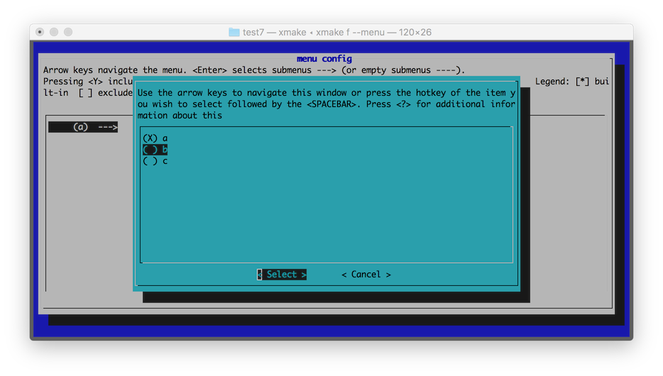
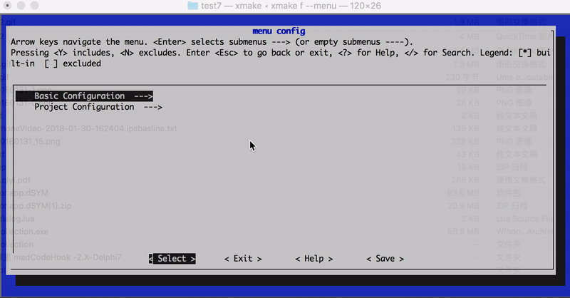

描述域¶
定义和设置选项开关，每个 option 对应一个选项，可用于自定义编译配置选项、开关设置。
除了
target以外的所有域接口，例如option，task等的接口，默认不能放置在外面的全局作用域中的（除非部分跟 target 共用的接口除外）。 如果要设置值影响所有option，task等选项，可以通过匿名全局域来设置。 不过我们不推荐这么使用，后续是会废弃掉option_end接口以保持 xmake.lua 脚本的易读性。
例如：
-- 进入 option 的匿名全局域，里面的设置会同时影响 test 和 test2 选项
option()
add_defines("DEBUG")
option("test")
-- ...
-- 尽量保持缩进，因为这个之后的所有设置，都是针对 test 选项的
option("test2")
-- ...
option域是可以重复进入来实现分离设置的，如果要显示离开当前选项的作用域设置，可以手动调用 option_end 接口。
option¶
定义和设置选项开关，可用于自定义编译配置选项、开关设置。
例如，定义一个是否启用 test 的选项：
然后关联到指定的 target 中去：
这样，一个选项就算定义好了，如果这个选项被启用，那么编译这个 target 的时候，就会自动加上 -DTEST 的宏定义。
option_end¶
这是一个可选 api，显示离开选项作用域，用法和 target_end 类似。
option:add_deps¶
通过设置依赖，可以调整选项的检测顺序，一般用于 on_check 等检测脚本的调用时机。
option("small", function()
set_default(true)
on_check(function (option)
-- ...
end)
end)
option("test", function()
add_deps("small")
set_default(true)
after_check(function (option)
if option:dep("small"):enabled() then
option:enable(false)
end
end)
end)
当依赖的 small 选项检测完成后，通过判断 small 选项的状态，来控制 test 的选项状态。
由于 on_check 只有在没有设置 default 值的情况下才会被执行，因此如果设置了 default 值，那么可以在 after_check 阶段处理自定义逻辑。
option:before_check¶
选项检测之前执行此脚本：
option:on_check¶
自定义选项检测脚本，此脚本会覆盖内置的选项检测逻辑。
option("test", function()
add_deps("small")
on_check(function (option)
option:enable(true)
end)
end)
仅仅在
set_default没有被设置的情况下，才会执行on_check进行自定义的选项检测脚本。
option:after_check¶
在选项检测完成后，执行此脚本做一些后期处理，也可以在此时重新禁用选项：
option("test", function()
add_deps("small")
add_links("pthread")
after_check(function (option)
option:enable(false)
end)
end)
option:set_values¶
设置选项值列表，仅用于 xmake f --menu 的图形菜单配置时，提供选项值列表供用户快速选择使用，例如：
效果图如下：

option:set_default¶
在没有通过 xmake f --option=[y|n} 等命令修改选项值的时候，这个选项本身也是有个默认值的，可以通过这个接口来设置：
选项的值不仅支持 boolean 类型，也可以是字符串类型，例如：
| 值类型 | 描述 | 配置 |
|---|---|---|
| boolean | 一般用作参数开关，值范围：true/false |
xmake f --optionname=[y/n/yes/no/true/false] |
| string | 可以是任意字符串，一般用于模式判断 | xmake f --optionname=value |
如果是 boolean 值的选项，可以通过 has_config 来进行判断，选项是否被启用。
如果是 string 类型的选项，可以在内建变量中直接使用，例如：
-- 定义一个路径配置选项，默认使用临时目录
option("rootdir", function()
set_default("$(tmpdir)")
set_showmenu(true)
end)
target("test", function()
-- 添加指定选项目录中的源文件
add_files("$(rootdir)/*.c")
end)
其中，$(rootdir) 就是自定义的选项内建变量，通过手动配置，可以动态修改它的值：
给这个 rootdir 选项指定一个其他的源码目录路径，然后编译。
选项的检测行为：
| default 值 | 检测行为 |
|---|---|
| 没有设置 | 优先手动配置修改，默认禁用，否则会启用自动检测，也会执行 on_check，可根据手动传入的值类型，自动切换 boolean 和 string 类型 |
| false | 开关选项，不自动检测，默认禁用，可手动配置修改 |
| true | 开关选项，不自动检测，默认启用，可手动配置修改 |
| string 类型 | 无开关状态，不自动检测，可手动配置修改，一般用于配置变量传递 |
option:set_showmenu¶
用于设置是否启用菜单显示。
如果设置为 true，那么在 xmake f --help 里面就会出现这个选项，也就能通过 xmake f --optionname=xxx 进行配置，否则只能在 xmake.lua 内部使用，无法手动配置修改。
设置为启用菜单后，执行 xmake f --help 可以看到，帮助菜单里面多了一项：
此选项默认改为启用，通常都不需要额外配置它。考虑后面删除这个 api。
option:set_category¶
这个是个可选配置，仅用于在帮助菜单中，进行分类显示选项，同一类别的选项，会在同一个分组里面显示，这样菜单看起来更加的美观。
例如：
option("test1", function()
set_showmenu(true)
set_category("test")
end)
option("test2", function()
set_showmenu(true)
set_category("test")
end)
option("demo1", function()
set_showmenu(true)
set_category("demo")
end)
option("demo2", function()
set_showmenu(true)
set_category("demo")
end)
这里四个选项分别归类于两个分组：test 和 demo，那么显示的布局类似这样：
这个接口，仅仅是为了调整显示布局，更加美观而已，没其他用途。
还可以通过 category 设置分级路径名 set_category("root/submenu/submenu2")，来配置 xmake f --menu 的图形菜单界面，例如：
-- 'boolean' option
option("test1", function()
set_default(true)
set_showmenu(true)
set_category("root menu/test1")
end)
-- 'choice' option with values: "a", "b", "c"
option("test2", function()
set_default("a")
set_values("a", "b", "c")
set_showmenu(true)
set_category("root menu/test2")
end)
-- 'string' option
option("test3", function()
set_default("xx")
set_showmenu(true)
set_category("root menu/test3/test3")
end)
-- 'number' option
option("test4", function()
set_default(6)
set_showmenu(true)
set_category("root menu/test4")
end)
上述配置最后显示的菜单界面路径结构：
- root menu
- test1
- test2
- test3
- test3
- test4
效果图如下：

option:set_description¶
设置选项菜单显示时，右边的描述信息，用于帮助用户更加清楚的知道这个选项的用途，例如：
option("test", function()
set_default(false)
set_showmenu(true)
set_description("Enable or disable test")
end)
生成的菜单内容如下：
这个接口也支持多行显示，输出更加详细的描述信息，例如：
option("mode", function()
set_default("debug")
set_showmenu(true)
set_description("Set build mode",
"- debug",
"- release",
"- profile")
end)
生成的菜单内容如下：
看到这个菜单，用户就能清楚地知道，定义的这个 mode 选项的具体用处，以及如何使用了：
option:add_links¶
添加链接库检测。
如果指定的链接库检测通过，此选项将被启用，并且对应关联的 target 会自动加上此链接，例如：
option("pthread", function()
add_links("pthread")
add_linkdirs("/usr/local/lib")
end)
target("test", function()
add_options("pthread")
end)
如果检测通过，test 目标编译的时候就会自动加上：-L/usr/local/lib -lpthread 编译选项
option:add_linkdirs¶
添加链接库检测时候需要的搜索目录。
这个是可选的，一般系统库不需要加这个，也能检测通过，如果确实没找到，可以自己追加搜索目录，提高检测通过率。具体使用见：add_links
option:add_rpathdirs¶
添加程序运行时动态库的加载搜索目录。
在选项通过检测后，会自动添加到对应的 target 上去，具体使用见：target.add_rpathdirs。
option:add_cincludes¶
添加 c 头文件检测。
如果 c 头文件检测通过，此选项将被启用，例如：
option("pthread", function()
add_cincludes("pthread.h")
add_defines("ENABLE_PTHREAD")
end)
target("test", function()
add_options("pthread")
end)
此选项检测是否存在 pthread.h 的头文件，如果检测通过那么 test 目标程序将会加上 ENABLE_PTHREAD 的宏定义。
如果想要更加灵活的检测，可以通过 lib.detect.has_cincludes 在option.on_check中去实现。
option:add_cxxincludes¶
添加 c++ 头文件检测。
与 add_cincludes 类似，只是检测的头文件类型是 c++ 头文件。
option:add_ctypes¶
添加 c 类型检测。
如果 c 类型检测通过，此选项将被启用，例如：
option("wchar", function()
add_ctypes("wchar_t")
add_defines("HAVE_WCHAR")
end)
target("test", function()
add_options("wchar")
end)
此选项检测是否存在 wchar_t 的类型，如果检测通过那么 test 目标程序将会加上 HAVE_WCHAR 的宏定义。
如果想要更加灵活的检测，可以通过 lib.detect.has_ctypes 在option.on_check中去实现。
option:add_cxxtypes¶
添加 c++ 类型检测。
与 add_ctypes 类似，只是检测的类型是 c++ 类型。
option:add_csnippets¶
添加 c 代码片段检测。
如果现有的 add_ctypes, add_cfuncs 等不能满足当前的检测需求， 可以用这个接口实现更加定制化检测一些编译器特性检测，具体见: add_cxxsnippets。
option:add_cxxsnippets¶
添加 c++ 代码片段检测。
可以用这个接口实现更加定制化检测一些编译器特性检测，尤其是 c++ 的各种特性的检测支持，例如：
option("constexpr", function()
add_cxxsnippets("constexpr", "constexpr int f(int x) { int sum=0; for (int i=0; i<=x; ++i) sum += i; return sum; } constexpr int x = f(5); static_assert(x == 15);")
end)
第一个参数设置代码片段的名字作为标示，检测输出信息时候会有显示。
上述代码，实现对 c++ 的 constexpr 特性的检测，如果检测通过，则启用 constexpr 选项，当然这里只是个例子。
对于编译器特性的检测，有更加方便高效的检测模块，提供更强大的检测支持，具体见：compiler.has_features 和 detect.check_cxsnippets
如果想要更加灵活的检测，可以通过 lib.detect.check_cxsnippets 在option.on_check中去实现。
另外我们还可以通过 {tryrun = true} 和 {output = true} 两个选项用于尝试运行检测和捕获输出。
设置 tryrun 可以尝试运行来检测：
option("test", function()
add_cxxsnippets("HAS_INT_4", "return (sizeof(int) == 4)? 0 : -1;", {tryrun = true})
end)
设置 output 也会尝试去检测，并且额外捕获运行的输出内容。
option("test", function()
add_cxxsnippets("INT_SIZE", 'printf("%d", sizeof(int)); return 0;', {output = true, number = true})
end)
设置为捕获输出，当前 option 不能再设置其他 snippets。
我们也可以通过 is_config 获取绑定到 option 的输出。
option:add_cfuncs¶
添加 c 库函数检测。
option("setjmp", function()
add_cincludes("setjmp.h")
add_cfuncs("sigsetjmp", "setjmp")
add_defines("HAVE_SETJMP")
end)
target("test", function()
add_options("setjmp")
end)
此选项检测是否存在 setjmp 的一些接口，如果检测通过那么 test 目标程序将会加上 HAVE_SETJMP 的宏定义。
里面的函数片段支持下面几种语法格式：
-- 单纯检测函数地址是否存在，内部会尝试去它的地址来判断
sigsetjmp
-- 如果有些函数是宏定义 wrap 的，可以通过这种方式绕通过检测
sigsetjmp((void*)0, 0)
-- 也可以指定一个完整函数语句，例如：funcname{codebody}
sigsetjmp{sigsetjmp((void*)0, 0);}
sigsetjmp{int a = 0; sigsetjmp((void*)a, a);}
注意，检测的函数通常需要附带 add_cincludes 确保函数能够被正常 include 进来，否则检测会失败。
option:add_cxxfuncs¶
添加 c++ 库函数检测。
用法跟 option:add_cfuncs 一致。